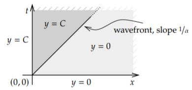

(a) Laplace transform
라플라스 변환을 수행할 수 있는 조건
- 적분 범위를 0부터 무한대로 잡을 수 있는 경계조건이어야 한다.
example1) Consider the first order PDE
$$ \frac{\partial}{\partial t}y\left(x,t\right)=-\alpha\frac{\partial}{\partial x}y\left(x,t\right),\quad x>0,\quad t>0 $$$$ \text{[B.C]}\quad y\left(0,t\right)=C,\quad\text{[I.C]}\quad y\left(x,0\right)=0 $$sol1

$$ sY\left(x,s\right)-y\left(x,0\right)=-\alpha\frac{\partial}{\partial x}Y\left(x,s\right) $$ $$ \frac{\partial}{\partial x}Y\left(x,s\right)+\frac{s}{\alpha}Y\left(x,s\right)=0 $$ $$ Y\left(x,s\right)=c_1e^{-\frac{s}{\alpha}x} $$ [B.C]을 라플라스 변환한다. $$ Y\left(0,s\right)=\frac{C}{s}=c_1 $$ $$ Y\left(x,s\right)=\frac{C}{s}e^{-\frac{x}{\alpha}s} $$ 역라플라스 변환을 수행한다. $$ L^{-1}\left\lbrace Y\left(x,s\right)\right\rbrace\left(x,t\right)=Cu\left(t-\frac{x}{\alpha}\right) $$

example2) Consider
$$ \frac{\partial}{\partial t}y\left(x,t\right)+\frac{\partial}{\partial x}y\left(x,t\right)+y\left(x,t\right)=0,\quad x>0,\quad t>0 $$$$ \text{[B.C]}\quad y\left(0,t\right)=\sin t,\quad\text{[I.C]}\quad y\left(x,0\right)=0 $$example3) Let us use Laplace for the following problem
$$ \frac{\partial}{\partial t}y\left(x,t\right)=\frac{\partial^2}{\partial x^2}y\left(x,t\right),\quad x>0,\quad t>0 $$$$ \text{[B.C]}\quad y_{x}\left(0,t\right)=f\left(t\right),\quad\text{[I.C]}\quad y\left(x,0\right)=0 $$example4) Consider the first order PDE
$$ \frac{\partial}{\partial x}u\left(x,t\right)+\frac{\partial}{\partial t}u\left(x,t\right)=x,\quad x>0,\quad t>0 $$$$ \text{[B.C]}\quad u\left(0,t\right)=0,\quad\text{[I.C]}\quad u\left(x,0\right)=0 $$example5)
$$ \frac{\partial}{\partial t}u\left(x,t\right)=\frac{\partial^2}{\partial x^2}u\left(x,t\right),\quad 0 < x < 2,\quad t > 0 $$$$ \text{[B.C]}\quad u\left(0,t\right)=0,\quad u\left(2,t\right)=0 $$$$ \text{[I.C]}\quad u\left(x,0\right)=3\sin2\pi x $$example6)
$$ \frac{\partial^2}{\partial t^2}u\left(x,t\right)=c^2\frac{\partial^2}{\partial x^2}u\left(x,t\right)+\sin\pi x,\quad 0 < x < 1,\quad t > 0 $$$$ \text{[B.C]}\quad u\left(0,t\right)=u\left(1,t\right)=0 $$$$ \text{[I.C]}\quad u\left(x,0\right)=0,\quad u_{t}\left(x,0\right)=0 $$6.5: Solving PDEs with the Laplace Transform - Mathematics LibreTexts